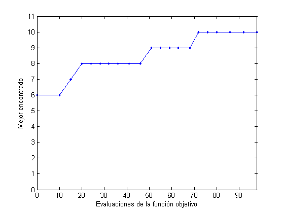
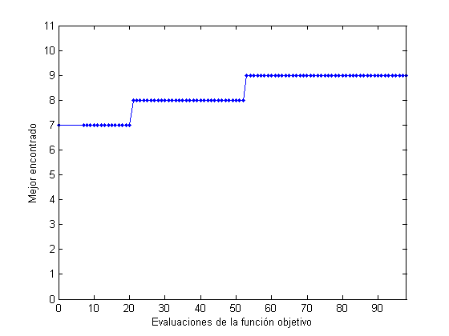
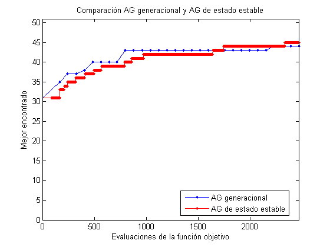

Algoritmo genético de estado estable
En este script se implementa un algoritmo genético no generacional, de estado estable, y se compara su desempeño con un algoritmo genético tradicional sobre la función onemax.
Contents
AG generacional
N = 10; n = 6; generaciones = 20; p = population('integer',N,0.2,0.7); p = random(p,n); p = evaluate(p,@onemax); best = get(p,'best'); B = [0 best.fitness]; for i=1:generaciones p = tournament(p); p = crossover(p); p = mutation(p); p = evaluate(p,@onemax); best = get(p,'best'); evalsAG = get(p,'evals'); B = [B;evalsAG best.fitness]; plot(B(:,1),B(:,2),'.-') axis([0 evalsAG 0 N+1]) xlabel('Evaluaciones de la función objetivo') ylabel('Mejor encontrado') pause(0.01) end totalEvals = get(p,'evals');
AG de estado estable
p = population('integer',N,0.2,0.7); p = random(p,n); p = evaluate(p,@onemax); best = get(p,'best'); evalsAGng = 0; C = [0 best.fitness]; while evalsAGng<evalsAG p = roulette(p,'',1); p = crossover(p,1); p = mutation(p,1); p = evaluateLast(p,@onemax); p = eraseWeak(p); best = get(p,'best'); evalsAGng = get(p,'evals'); C = [C;evalsAGng best.fitness]; plot(C(:,1),C(:,2),'.-') axis([0 evalsAGng 0 N+1]) xlabel('Evaluaciones de la función objetivo') ylabel('Mejor encontrado') pause(0.01) end
Comparación frente a frente
N = 50; n = 80; generaciones = 30; p = population('integer',N,0.2,0.7); p = random(p,n); p1 = p; p2 = p; p1 = evaluate(p1,@onemax); best1 = get(p1,'best'); B = [0 best1.fitness]; p2 = evaluate(p2,@onemax); best2 = get(p2,'best'); C = [0 best2.fitness]; for i=1:generaciones p1 = tournament(p1,4); p1 = crossover(p1); p1 = mutation(p1); p1 = evaluate(p1,@onemax); best1 = get(p1,'best'); evals1 = get(p1,'evals'); B = [B;evals1 best1.fitness]; while 1 p2 = roulette(p2,'',1); p2 = crossover(p2,1); p2 = mutation(p2,1); p2 = evaluateLast(p2,@onemax); p2 = eraseWeak(p2); best2 = get(p2,'best'); evals2 = get(p2,'evals'); C = [C;evals2 best2.fitness]; if evals2 >= evals1 break end end plot(B(:,1),B(:,2),'.-',C(:,1),C(:,2),'.-r') axis([0 evals1 0 N+1]) legend('AG generacional','AG de estado estable','location','best') xlabel('Evaluaciones de la función objetivo') ylabel('Mejor encontrado') title('Comparación AG generacional y AG de estado estable') pause(0.01) end